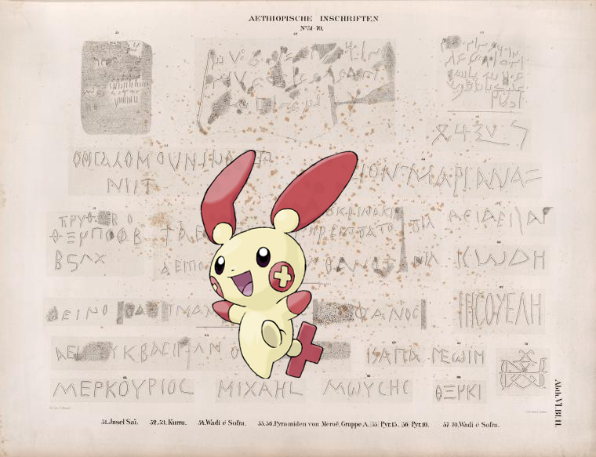

Pokémon in the NYPL archives
2018-5-2 22:10:05

Plusle |
Aethiopische Inschriften No. 51-70. 51. Insel Saï ; 52, 53. Kurru [el-Kurru]; 54. Wadi e'Sofra [Musawwarat al-Sufrah Site] ; 55, 56. Pyramiden von Meroë, Gruppe A. [55] Pyr. 15, [56] Pyr.10. 57-70. Wadi e'Sofra . Inschrift aus Wadi e'Sofra.
.